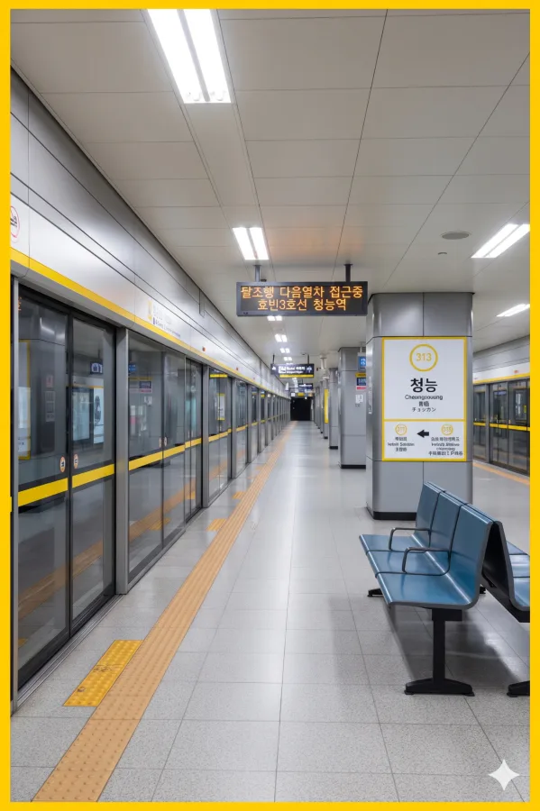

효빈 도시철도 3호선 313번, 창전선 C21번. 효빈광역시 북구 청능동 533 소재.
인근에 위치한 고려 시대의 가상의 왕릉인 '청능'에서 역명이 유래했다. 역 주변은 조용한 주거 단지였으나, 최근 특정 이유로 외지인들의 방문이 늘고 있다. (자세한 건 기타 문단 참조)
추후 창전선 3단계 구간이 개통되면 환승역이 될 예정이나, 타 구간에 비해 수요가 애매하다는 판단 하에 3단계 구간으로 미뤄져 개통 시기는 아직 미정이다.
1994년 개업 당시부터 북구 주민들의 발이 되어온 역이다. 지하 2층 구조로 되어 있으며, 승강장과 대합실이 깔끔하게 관리되고 있다. 운영은 효빈교통공사에서 담당한다.
향후 창전선이 개통되면 모노레일과 도시철도 간의 환승 거점으로 기능할 예정이다. 다만, 창전선 청능역은 수요 부족 우려로 인해 다른 구간보다 늦은 3단계 개통으로 잡혀 있어, 실제 환승까지는 상당한 시일이 걸릴 것으로 보인다.
|
3
C
청능역 출구 정보
|
||
|---|---|---|
| 번호 | 주요 시설 및 방향 | 비고 |
| 1 | 청덕우체국, 노드치과, 청덕3동행정복지센터, 서효빈병원, 영풍문고 | |
| 2 | 미아초등학교 | |
| 3 | 서구초, 서구중 | |
| 4 | 송덕역 센트럴파크아파트 1차 | |
| 5 | 송덕역 센트럴파크아파트 2차 | |
| 6 | 청덕하나리움 2차, 미아초 | |
완만한 상승세를 보이고 있다. 2022년 이후 이용객이 1만 명을 돌파했다.
| 청능역 이용객 통계 | ||
|---|---|---|
| 연도 | 일평균 이용객 | 비고 |
| 2020년 | 8,721명 | |
| 2021년 | 9,501명 | |
| 2022년 | 10,323명 | |
| 2023년 | 10,345명 | |
| 2024년 | 10,373명 | |

| 북효빈 ↑ | ||||
| 하 | ㅣ | ㅣ | 상 | |
| ↓ 효빈복지대학교 | ||||
| 상 | 3 효빈 도시철도 3호선 | 북효빈 · 팔조 방면 |
| 하 | 3 효빈 도시철도 3호선 | 효빈복지대학교 · 효빈국제공항 방면 |
※ 창전선 급행 열차는 이 역에 정차하지 않고 통과한다.
| 소 조 ↑ | ||||
| 상 | ㅣ | ㅣ | 하 | |
| ↓ 시 청 | ||||
| 상 | C 창전선 | 팔조 방면 |
| 하 | C 창전선 | 토모리해수욕장 방면 |
청능역을 경유하는 버스 노선들이다.
| 구분 | 정류소명 | 노선 번호 |
|---|---|---|
| 순방향 | 청능역 | 123, 271, 292, 6000, 6666 |
| 역방향 | 청능역(건너편) | 213, 721, 922, 6000R, 6666R |